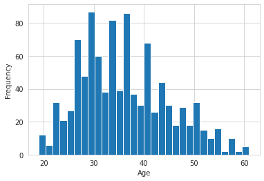
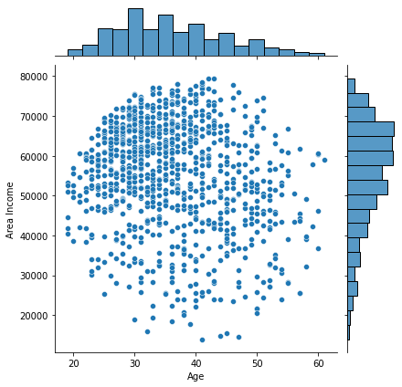
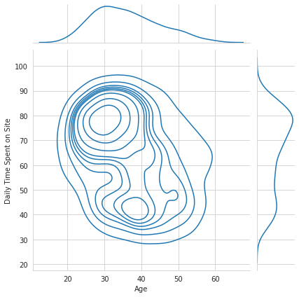
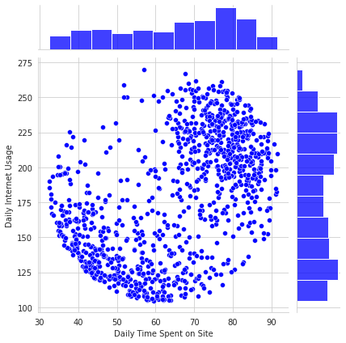
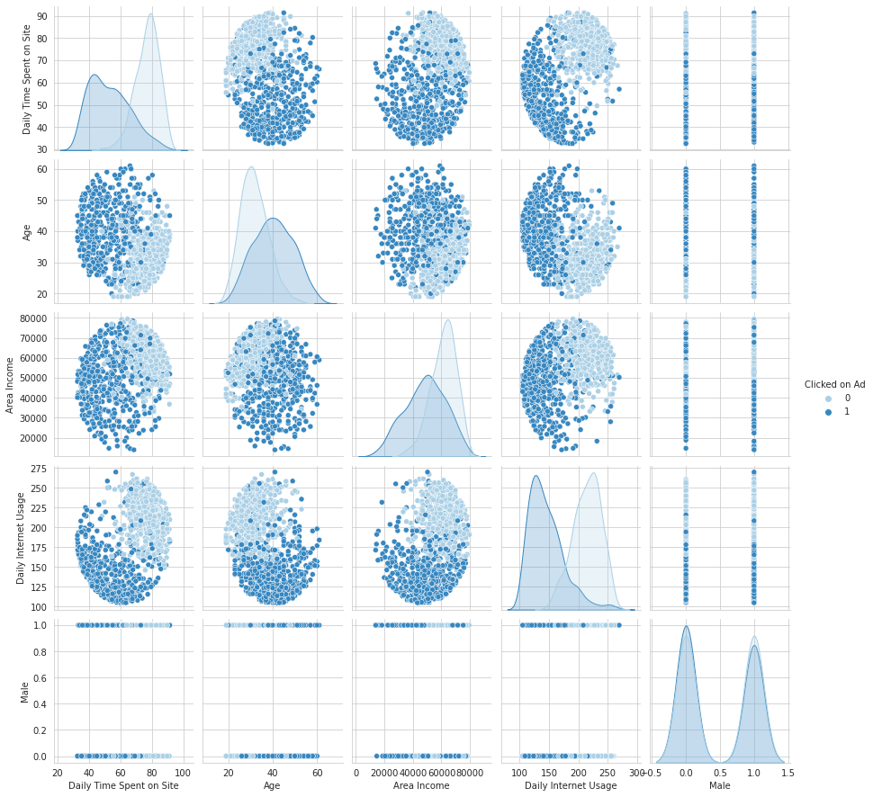

Logistic Regression Project
In this project we will be working with a fake advertising data set, indicating whether or not a particular internet user clicked on an Advertisement. We will try to create a model that will predict whether or not they will click on an ad based off the features of that user.
This data set contains the following features:
- 'Daily Time Spent on Site': consumer time on site in minutes
- 'Age': cutomer age in years
- 'Area Income': Avg. Income of geographical area of consumer
- 'Daily Internet Usage': Avg. minutes a day consumer is on the internet
- 'Ad Topic Line': Headline of the advertisement
- 'City': City of consumer
- 'Male': Whether or not consumer was male
- 'Country': Country of consumer
- 'Timestamp': Time at which consumer clicked on Ad or closed window
- 'Clicked on Ad': 0 or 1 indicated clicking on Ad
Import Libraries
Import a few libraries you think you'll need (Or just import them as you go along!)
import pandas as pd
import seaborn as sns
import numpy as np
import matplotlib.pyplot as plt
%matplotlib inline
Get the Data
Read in the advertising.csv file and set it to a data frame called ad_data.
ad_data = pd.read_csv('advertising.csv')
Check the head of ad_data
ad_data.head()
| Daily Time Spent on Site | Age | Area Income | Daily Internet Usage | Ad Topic Line | City | Male | Country | Timestamp | Clicked on Ad | |
|---|---|---|---|---|---|---|---|---|---|---|
| 0 | 68.95 | 35 | 61833.90 | 256.09 | Cloned 5thgeneration orchestration | Wrightburgh | 0 | Tunisia | 2016-03-27 00:53:11 | 0 |
| 1 | 80.23 | 31 | 68441.85 | 193.77 | Monitored national standardization | West Jodi | 1 | Nauru | 2016-04-04 01:39:02 | 0 |
| 2 | 69.47 | 26 | 59785.94 | 236.50 | Organic bottom-line service-desk | Davidton | 0 | San Marino | 2016-03-13 20:35:42 | 0 |
| 3 | 74.15 | 29 | 54806.18 | 245.89 | Triple-buffered reciprocal time-frame | West Terrifurt | 1 | Italy | 2016-01-10 02:31:19 | 0 |
| 4 | 68.37 | 35 | 73889.99 | 225.58 | Robust logistical utilization | South Manuel | 0 | Iceland | 2016-06-03 03:36:18 | 0 |
** Use info and describe() on ad_data**
ad_data.info()
<class 'pandas.core.frame.DataFrame'>
RangeIndex: 1000 entries, 0 to 999
Data columns (total 10 columns):
# Column Non-Null Count Dtype
--- ------ -------------- -----
0 Daily Time Spent on Site 1000 non-null float64
1 Age 1000 non-null int64
2 Area Income 1000 non-null float64
3 Daily Internet Usage 1000 non-null float64
4 Ad Topic Line 1000 non-null object
5 City 1000 non-null object
6 Male 1000 non-null int64
7 Country 1000 non-null object
8 Timestamp 1000 non-null object
9 Clicked on Ad 1000 non-null int64
dtypes: float64(3), int64(3), object(4)
memory usage: 78.2+ KB
ad_data.describe()
| Daily Time Spent on Site | Age | Area Income | Daily Internet Usage | Male | Clicked on Ad | |
|---|---|---|---|---|---|---|
| count | 1000.000000 | 1000.000000 | 1000.000000 | 1000.000000 | 1000.000000 | 1000.00000 |
| mean | 65.000200 | 36.009000 | 55000.000080 | 180.000100 | 0.481000 | 0.50000 |
| std | 15.853615 | 8.785562 | 13414.634022 | 43.902339 | 0.499889 | 0.50025 |
| min | 32.600000 | 19.000000 | 13996.500000 | 104.780000 | 0.000000 | 0.00000 |
| 25% | 51.360000 | 29.000000 | 47031.802500 | 138.830000 | 0.000000 | 0.00000 |
| 50% | 68.215000 | 35.000000 | 57012.300000 | 183.130000 | 0.000000 | 0.50000 |
| 75% | 78.547500 | 42.000000 | 65470.635000 | 218.792500 | 1.000000 | 1.00000 |
| max | 91.430000 | 61.000000 | 79484.800000 | 269.960000 | 1.000000 | 1.00000 |
Exploratory Data Analysis
Let's use seaborn to explore the data!
Try recreating the plots shown below!
** Create a histogram of the Age**
sns.set_style('whitegrid')
ad_data['Age'].plot.hist(bins=30)
plt.xlabel('Age')
Text(0.5, 0, 'Age')

Create a jointplot showing Area Income versus Age.
sns.jointplot(x='Age', y='Area Income', data=ad_data)
<seaborn.axisgrid.JointGrid at 0x7fdd6e7d8b90>

Create a jointplot showing the kde distributions of Daily Time spent on site vs. Age.
sns.jointplot(x='Age', y='Daily Time Spent on Site', data=ad_data, kind='kde')
<seaborn.axisgrid.JointGrid at 0x7fdd689d7cd0>

** Create a jointplot of 'Daily Time Spent on Site' vs. 'Daily Internet Usage'**
sns.jointplot(x='Daily Time Spent on Site', y='Daily Internet Usage', data=ad_data, color='blue')
<seaborn.axisgrid.JointGrid at 0x7fdd68739110>

** Finally, create a pairplot with the hue defined by the 'Clicked on Ad' column feature.**
sns.pairplot(ad_data, hue='Clicked on Ad', palette='Blues')
<seaborn.axisgrid.PairGrid at 0x7fdd66602ed0>

Logistic Regression
Now it's time to do a train test split, and train our model!
You'll have the freedom here to choose columns that you want to train on!
** Split the data into training set and testing set using traintestsplit**
X = ad_data[['Daily Time Spent on Site', 'Age', 'Area Income', 'Daily Internet Usage', 'Male']]
y = ad_data['Clicked on Ad']
from sklearn.model_selection import train_test_split
X_train, X_test, y_train, y_test = train_test_split(X, y, test_size=0.3, random_state=101)
** Train and fit a logistic regression model on the training set.**
from sklearn.linear_model import LogisticRegression
ad_model = LogisticRegression()
ad_model.fit(X_train, y_train)
LogisticRegression(C=1.0, class_weight=None, dual=False, fit_intercept=True,
intercept_scaling=1, l1_ratio=None, max_iter=100,
multi_class='auto', n_jobs=None, penalty='l2',
random_state=None, solver='lbfgs', tol=0.0001, verbose=0,
warm_start=False)
Predictions and Evaluations
** Now predict values for the testing data.**
predictions = ad_model.predict(X_test)
** Create a classification report for the model.**
from sklearn.metrics import classification_report
print(classification_report(y_test, predictions))
precision recall f1-score support
0 0.91 0.95 0.93 157
1 0.94 0.90 0.92 143
accuracy 0.93 300
macro avg 0.93 0.93 0.93 300
weighted avg 0.93 0.93 0.93 300